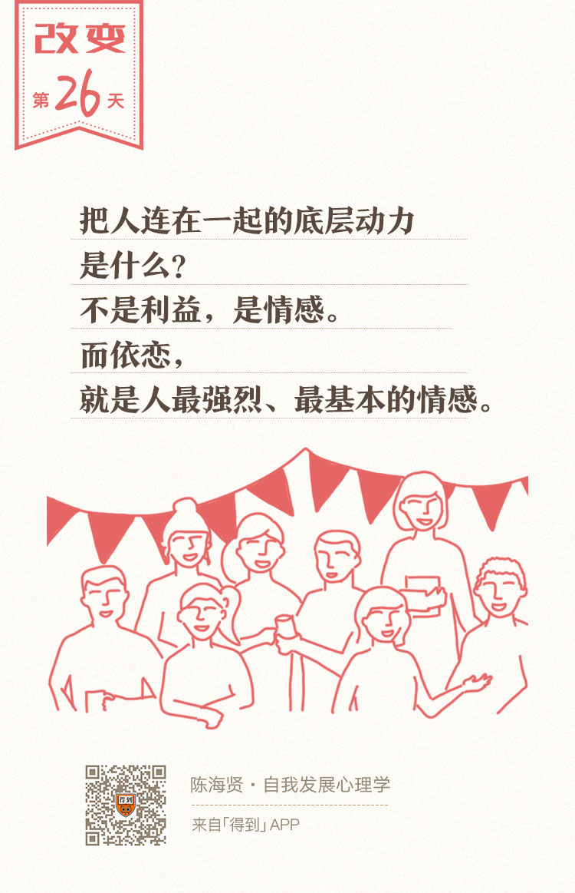

26丨不安全依恋：爱为什么会变成牢笼？

欢迎来到《自我发展心理学》。
你好，我是陈海贤。
通过前三节课的讲解，相信你已经对怎么从关系的视角看自我，有了更多的理解。从这节课开始，我们把话题从关系的视角引申到自我发展。
既然自我不再是稳固的实体，而是关系的产物，那么自我发展的核心问题，也就从一个孤立的个体如何创造新经验，转变成了一个身处关系中的人如何构建有利于自我发展的新关系。
那么，什么样的关系最有利于自我的发展？我心里的答案，是一种自主的、有选择的，但又能够为自己负责的关系。
这样的关系有两个特征：
首先，我们不会轻易被别人的情绪影响，而是能自由地做出选择。
其次，我们能够去不断探索新的关系，发现更多新的自己，而不是被绑在某段关系或者某个角色中无法动弹。
可是在现实生活中，我们却经常会被他人的情绪影响，会生活在他人的目光中，会在一段不健康的关系中纠缠不清。
为什么会这样？不健康的关系到底是怎么影响自我的发展的呢？
接下来，我们会用5节课的时间，来看看，在关系中，自己和他人的感觉是如何被混淆的，责任是如何被混淆的，以及这些混淆带来的结果。
这一讲，我们就来说说导致感觉混淆的最重要的原因之一：不安全依恋。
不安全感来自对母亲的依恋
我4岁那年，妈妈去照顾生孩子的小姨，把我放在外婆家，放了一星期。
据我外婆说，在外婆家那几天，我经常失魂落魄地望着院子的大门，等着妈妈回来，一望就是半天。
有一天，院子里出现一个身影，是邻居，他说，看到你妈妈回来了，已经下公交了。
我抛下外婆，飞快地跑了出去，跑下一个斜坡的时候，我看到远远的影子，妈妈就在前面了。结果，身体没有跟上灵魂的步伐，因为跑得太快，狠狠地摔了一跤，磕断了两颗门牙。
虽然你并不认识我，可是当我这么说的时候，你很容易理解一个孩子迫切想要回到妈妈怀抱的心情。孩子扑向妈妈的怀抱，这饱含情感的一幕，是人类共同的经验。
我们说，人和人之间是紧密相连的，所以形成了各种关系。
可是，什么是把人连在一起的底层动力呢？不是利益，是情感。而我要讲的依恋，就是人最强烈、最基本的情感。
什么是依恋呢？
依恋就是孩子和父母，尤其是母亲之间强烈和紧密的情感联系。关于依恋，我想你肯定有很多自己的经验。
我3岁的女儿现在还是和妈妈睡在一起的。
睡觉的时候，两个人呼吸连着呼吸，心跳连着心跳，就好像两人变成了不可分离的一个人。
在日常生活中，妈妈和孩子之间也有很多亲密的互动。比如，孩子看妈妈，妈妈回看孩子；孩子冲妈妈笑，妈妈也冲孩子笑。这时候，孩子和妈妈都会觉得温馨。
这种紧密的关系，就是依恋。
不健康的依恋带来不安全感
健康的依恋是孩子安全感的来源。
如果依恋对象本身有很大的不安全感，那也会让孩子觉得不安全。这就是一种不安全依恋。
北欧的心理学家曾经做过一个研究，观察婴儿对父母的反应。
他们发现有三个典型的场景。
第一个场景，父母在逗婴儿玩耍。
这时候婴儿就会很开心，很享受。这是一种安全的依恋。
第二个场景，父母自己在谈话，讨论他们工作和家庭的事情，没有把注意力放到孩子身上。
这时候婴儿也很安心，因为他知道父母在。所以他就会东看看西看看，探索他的世界。这是孩子有了安全感以后，发展社交能力的基础。
第三个场景，父母有了矛盾，他们吵架了。
这时候妈妈再去照顾婴儿，妈妈的心情是不好的。虽然妈妈很想掩饰，在逗婴儿笑，可是婴儿却看到了妈妈的不安。
这时候，婴儿就会很紧张。他就会在目光里去找爸爸在哪里，好像是找一个能安慰妈妈的人。
所以，依恋其实是一个情感通道。它既能把安全感传递给孩子，也能把不安全感传递给孩子。
在依恋的关系中，孩子就像一块海绵，吸收了妈妈的感觉。
如果妈妈有焦虑，她的焦虑会通过眼神、呼吸、表情传递给孩子。如果这种情况经常出现，妈妈的焦虑就会变成孩子的不安全感。
就像刚刚这个场景里，孩子紧张地盯着妈妈的表情，仿佛这是天下最重要的事情。这时候，他就不会有探索世界的兴趣了。
再长大一些，他就会把妈妈的焦虑当做是自己的问题，并因为自己没有办法解决妈妈的焦虑，而深深地苦恼和自责。
有人说，女儿是妈妈的小棉袄，如果妈妈过得不开心，这个小棉袄可不好当。
我有一个来访者，有一段时间心情不好，去幼儿园接女儿的时候，不用她说，女儿就会忧心忡忡地问：“妈妈，你今天不开心吗？你哪里不开心了？”
在紧密的依恋关系中，妈妈的不开心会变成孩子的不开心。而让妈妈开心，就会变成孩子的愿望。
这样会给孩子带来很深的不安，直到他们成年以后，这种不安全感仍然会在。
我有一个来访者，自己受过很好的教育，也有不错的工作，可一直没有恋爱，也经常不开心。
我问她为什么不开心，她说：“一想到我妈妈过得不开心，我就开心不起来。我想去旅游，也想给自己买好的东西，可是，只要我对自己好一点，妈妈忧郁的表情就会在我眼前浮现。”
她小时候，爸爸和妈妈关系不好，妈妈就经常跟她倒苦水。这给她留下了很深的印象。
有一天，我就把她妈妈也请到了咨询室。我问妈妈：“你需要女儿为你担心吗？”
妈妈说：“不需要啊。这几年，我也已经习惯了。而且现在我和她爸爸关系也还不错。”
我又问女儿：“你怎么看妈妈的话呢？”
女儿说：“不是这样的！你明明不开心，你只是在骗自己。”
女儿在说什么？她其实在说：我比我妈妈更懂她的感觉。
这么多年，妈妈的痛苦，已经深深地植入了她的感觉里。以至于有些感觉妈妈都忘记了，她还帮妈妈记着，有些事妈妈都希望过去了，她却过不去。
当妈妈的情感占据了她的头脑，她就分不清什么是她自己的情感，什么是妈妈的情感了。她沉浸在妈妈的感情里，就没有办法去发展自我了。
这就是过于紧密的依恋所带来的不安全感。
不安全感影响自我发展
那么，这种不安全感会怎么影响自我的发展呢？
我想主要有三点。
第一，如果父母的问题，尤其是母亲的烦恼占据了我们太多的注意力，那我们就很难再有好奇心去探索世界，也就很难发展出自己的技能。
在第二章讲成长型思维的时候，我曾讲过，孩子只有获得了安全感，才会对世界好奇，才会去探索世界。
听完“依恋”这一课，也许你对这一点会有更深一些的理解。
因为如果妈妈觉得不安，孩子就会面对一个更大的问题，而他们所有的注意力，都被这个更大的问题占据了。
我的一个来访者跟我说，有一段时间他在准备一个重要的考试，一边复习一边还想着父母那边吵架不知道好了没。这样，他就很难集中注意力来复习。
有一些研究表明，不安全的依恋也会导致拖延的问题。
这可能是因为拖延症患者需要想太多不安全的关系，以至于没法专注在自己的工作中了。
第二，因为习惯了观察别人的情绪，这种不安全感很容易让他们对别人的情绪敏感，无论是家人还是同事、朋友。
我发现，很多在人际关系上敏感的来访者，小时候都经历过不安全的依恋关系。
这样，他们就很容易把自己放到这样一个位置：我要为别人的情绪负责，所以如果别人不高兴了，那就是我的错。
这会给他们带来很大的负担，也让他们的人际关系变得复杂。
第三，不安全的依恋，让我们和母亲的关系变得更加紧密。
越是不安全，人越是会相互靠近。可是，孩子和母亲的关系越紧密，他就越难去跟别人建立友情和爱情。
还记得吗？自我是在关系里发展出来的。如果没有更丰富的关系，他就很难发展出丰富的自我。
同时，如果我们的心里装着太多母亲的感受，我们就很容易忽略自己的感受、情绪、感觉、需要、欲望，我们会把它们当做是不重要的东西。那我们的自我，就很难发展出来。
也许你会问，如果我已经在依恋关系中有了很多不安全感，那怎么办呢？
虽然修复不安全感的过程并不容易，但是对这个问题，我倒是有一个简单的答案：
既然旧的经验来自以往的关系，那我们也需要在新的关系中塑造我们的新经验。
对于这种不安全感，我们只能带着依恋的焦虑，一点点接近和信任别人，在安全的关系中，慢慢地塑造我们的新经验。
我们也要尝试把自己的感觉和母亲的感觉分开，去发展自己的关系和情感。这一点，我们后面的课程中还会讲到。
总结一下。
这一讲，我们说了导致感觉混淆的最重要的原因之一：不安全依恋。
我们讲了什么是不安全依恋，以及它对自我发展的三点影响。我们讨论更多的是两个人的亲密关系。
但在生活中，关系往往不仅仅是两个人之间的事情。下一讲，我们就来讲另一种导致感觉混淆的关系模式——三角关系。
我们下节课见。
